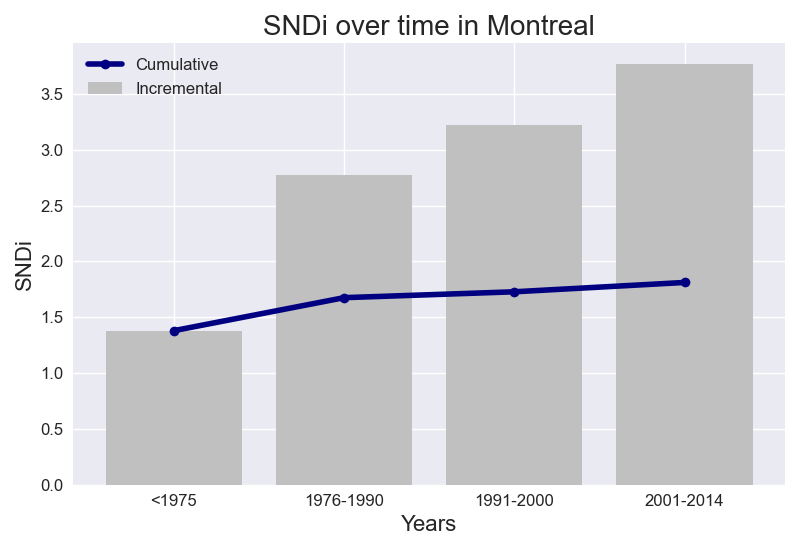

Street-network Sprawl is a way to measure urban sprawl, worldwide, through the connectedness of the streets. Less sprawl means more connected, more walkable streets. Well-connected streets – like New York City’s grid – are more walkable and can be served by public transit. Our measure for street-network sprawl is the sprawl index, or the SNDi (Street Network Disconnectedness Index). A higher SNDi means less-connected streets – i.e., more sprawl. The street network is permanent, and its connectivity affects the livability and environmental footprint of cities for decades and centuries to come. In places with more connected streets, residents drive less and walk more. Sprawl is associated with worse outcomes for health, the environment, overconsumption, social segregation, and equity. Here, we explore how sprawl in Montreal has changed over time.
View on the Atlas of Urban Expansion
View on the Sprawl Map
The cumulative and incremental level of street network disconnectivity in Montreal change over time in the same way.

Taking into account all roads in Montreal, the overall level of street network sprawl is 1.81. New street construction in Montreal has been increasing in disconnectivity over time. This increase has slowed: between <1975 and 1976-1990, SNDi rose by 1.4 points, but between 1991-2000 and 2001-2014, it rose by just 0.54.
The total level of street network sprawl in Montreal is lower than the regional level. The level of disconnectivity in new street development in Montreal follows the same trend as Québec.
Compared to Canada, the level of disconnectivity in Montreal is lower overall. The level of disconnectivity in new street development in Montreal does not follow the national trend. Between 1991-2000 and 2001-2014, national SNDi was decreasing instead.
To date, Montreal is the 7th-most disconnected city out of the 9 cities in Québec. It has maintained its place in the ranks since 1975. In <1975, it ranked 7th, ranked 6th in 1976-1990 and ranked 7th in 1991-2000 and ranked 6th in 2001-2014.